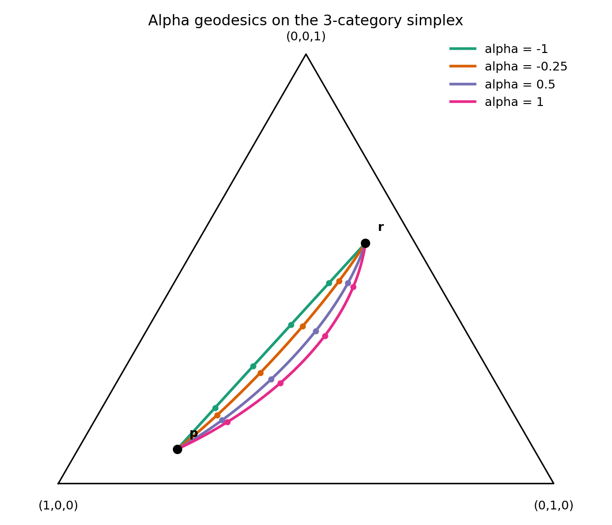
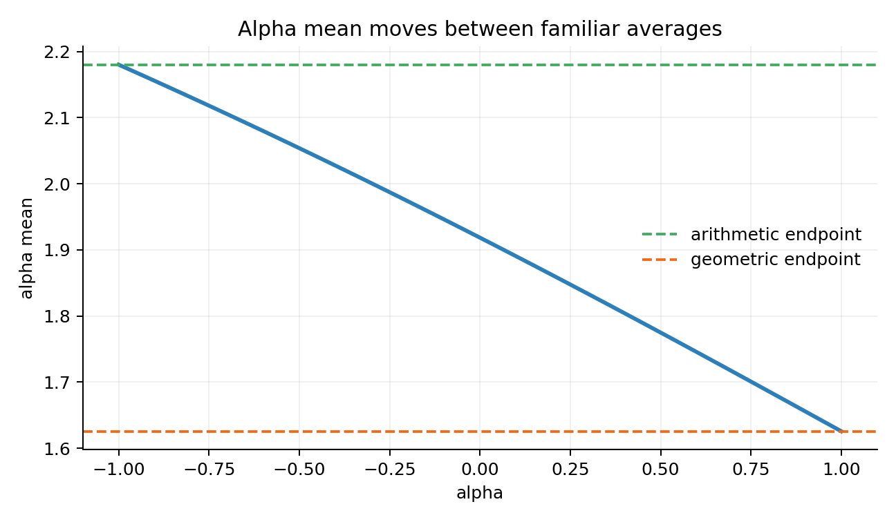
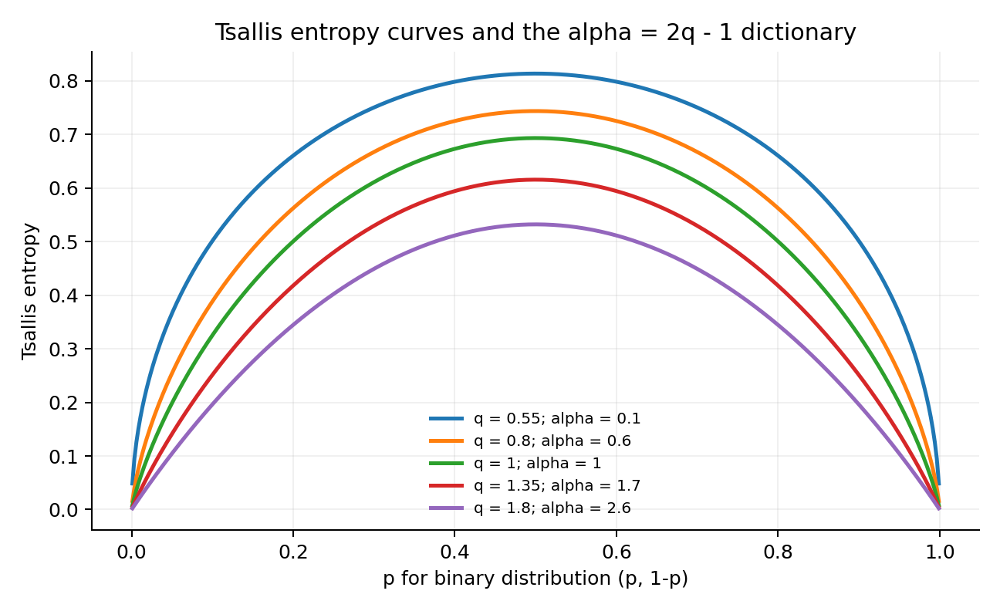
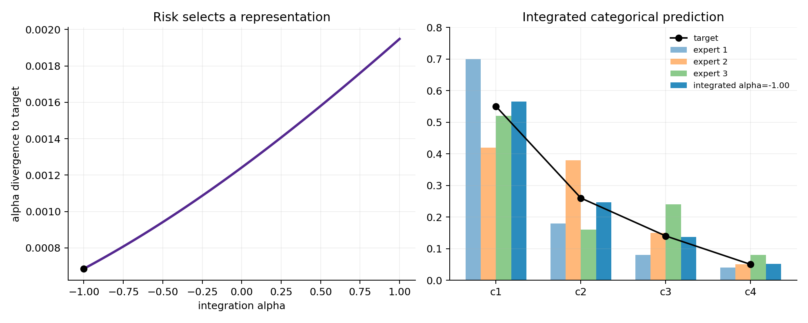
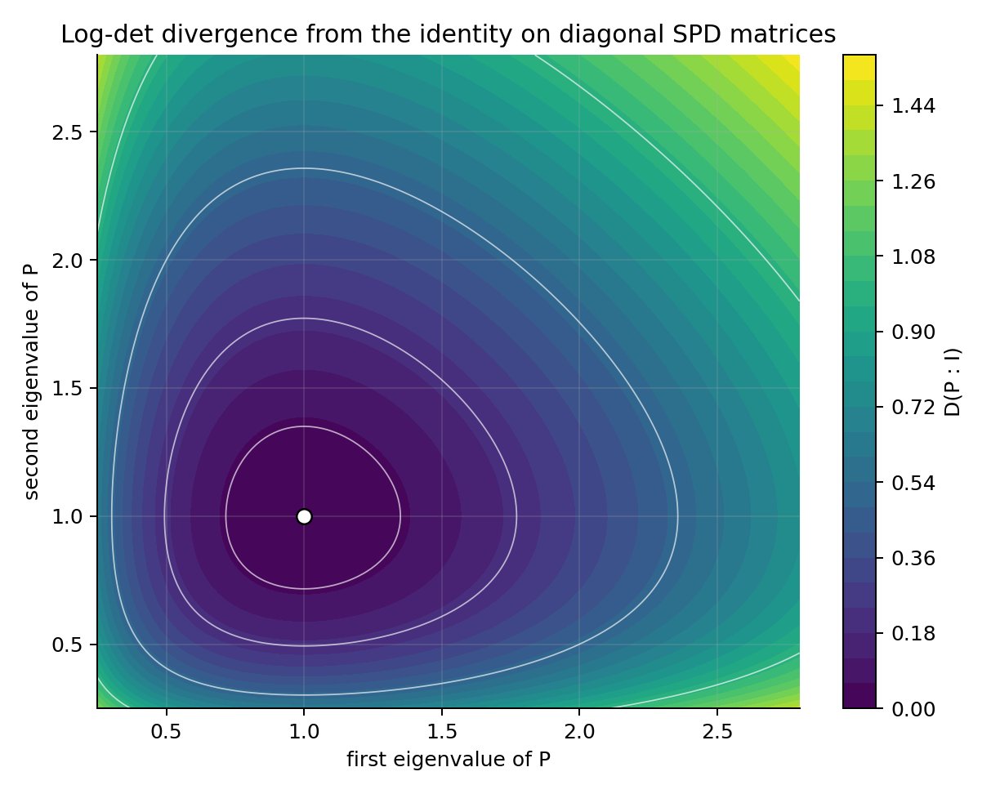

Source Span
Printed pages 71-106; PDF pages 88-123.
Notebook Spine
Power coordinates, normalized geodesics, q-deformations, escort flow, and log-det checks.
Question
Which representation is flat, and which constraint bends it?
How changing coordinates makes positive measures flat, bends the probability simplex, and extends divergence geometry to matrices.
Printed pages 71-106; PDF pages 88-123.
Power coordinates, normalized geodesics, q-deformations, escort flow, and log-det checks.
Which representation is flat, and which constraint bends it?
Power or log representations straighten the positive cone.
Straight upstairs, bent after simplex normalization.
A deformed entropy dialect with alpha = 2q - 1.
Power reweighting gives another flat probability representation.
Average in alpha coordinates, then normalize and score.
Log-det divergence tests matrix-valued positive measures.
representation -> linear calculation -> normalization or invariant check
\(h_\alpha(m)_i = m_i^{(1-\alpha)/2}\), with a logarithmic limit at \(\alpha=1\)
Components can scale freely, so the power representation supplies affine coordinates.
The condition \(\sum_i p_i=1\) is not generally affine in those coordinates.

All curves connect the same two categorical distributions.
Each alpha chooses a different coordinate system for linear interpolation.
Renormalization maps the coordinate line back onto the simplex.
Where does the curve approach the boundary as \(\alpha\) changes?
\(\alpha=0\) turns the positive cone into a Euclidean comparison in \(\sqrt m\)
Choose the flat coordinate, perform the linear or orthogonal computation, then translate back.
The small numerical example records a Pythagorean residual rather than asking the picture to prove it.


\(\alpha = 2q - 1\)
The q-logarithm changes how entropy responds to boundary mass.
As \(q\to1\), the ordinary Shannon and exponential-family language returns.
Compare flattening near the boundary across q values.
\(\mathrm{Esc}_q(p)_i = \dfrac{p_i^q}{\sum_j p_j^q}\)
Large coordinates are amplified and dominate the displayed distribution.
Small coordinates receive more relative mass.

Convert each predictive distribution into \(h_\alpha\) coordinates.
Pool linearly in the chosen representation.
Normalize back to a probability vector and score against held-out evidence.
\(\alpha\) tunes mixture-like versus multiplicative pooling
\(D(P:Q)=\operatorname{tr}(P Q^{-1})-\log\det(P Q^{-1})-n\)
Zero exactly when \(P=Q\).
Stable under \(P\mapsto APA^T\), \(Q\mapsto AQA^T\).

The divergence vanishes only at the reference covariance.
Approaching non-positive definiteness sharply increases the score.
Read contour spacing as a warning about the geometry near degeneracy.
spd_logdet_surface.html fixes Q and varies P
Power, logarithmic, escort, or matrix coordinates decide what looks affine.
Normalization bends most alpha lines on the probability simplex.
Divergence residuals, entropy limits, and congruence checks keep the claims honest.
Do the linear move in the right coordinate, then audit what remains invariant.
Which coordinate system makes the calculation linear or convex?
Does normalization or positive-definiteness bend the visible object?
Which residual, limit, divergence, or transformation test verifies the claim?